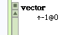

Create the Direction Classes
Each of the specific subclasses (North, East,...) will have 2 class methods. Notice that the following methods are CLASS methods, not INSTANCE methods.
GridDirectionNorth
GridDirectionEast
GridDirectionSouth
GridDirectionWest
When we want the proper GridDirection class we can send a message to the super class. Add this class method to the GridDirection class.